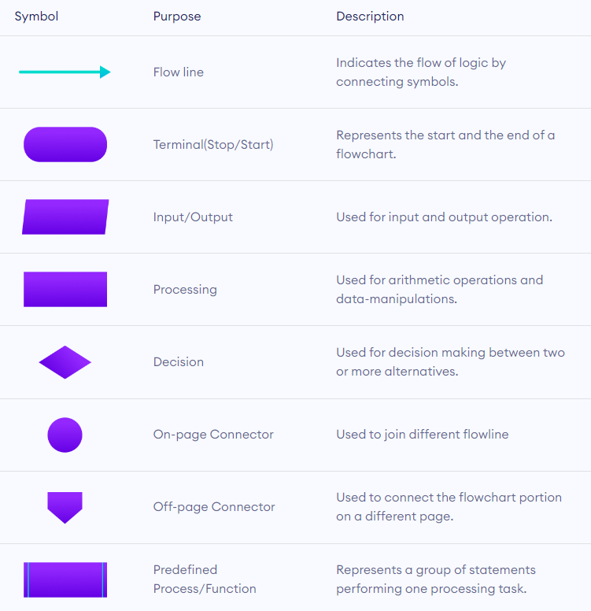
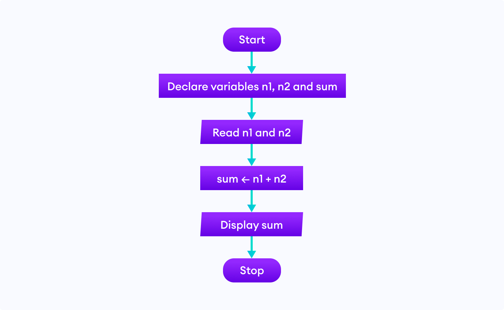
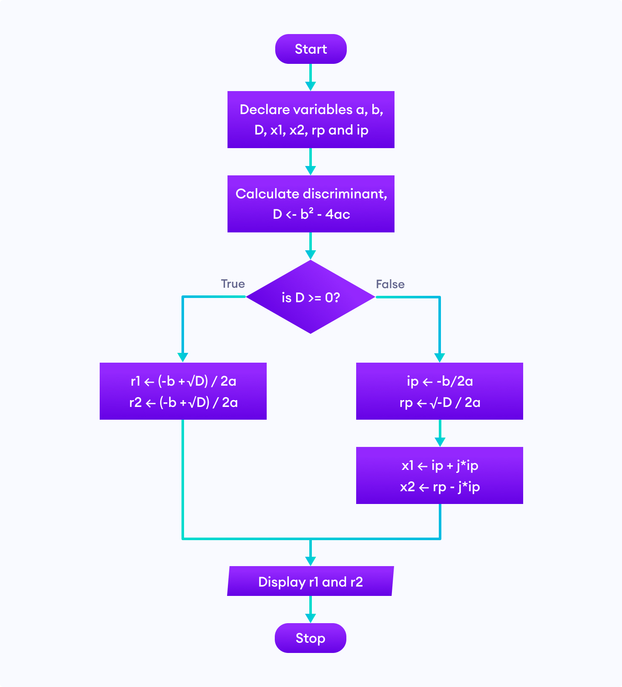
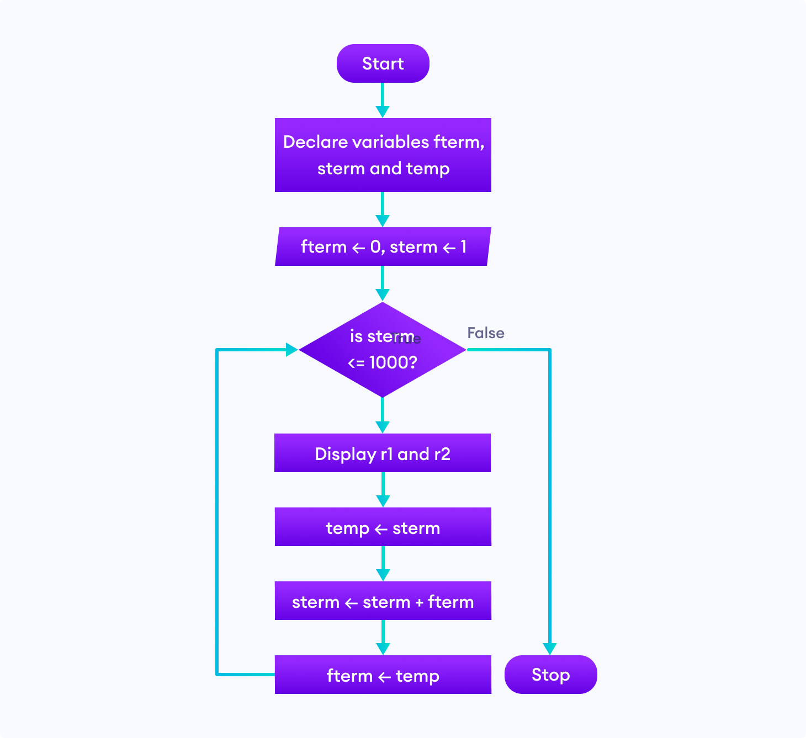

Flowchart
Flowchart In Programming
A flowchart is a diagrammatic representation of an algorithm. A flowchart can be helpful for both writing programs and explaining the program to others.
Symbols Used In Flowchart
Examples of flowcharts in programming
1. Add two numbers entered by the user.
2. Find the largest among three different numbers entered by the user.

3. Find all the roots of a quadratic equation ax²+bx+c=0
4. Find the Fibonacci series till term≤1000.

Note: Though flowcharts can be useful for writing and analyzing a program, drawing a flowchart for complex programs can be more complicated than writing the program itself. Hence, creating flowcharts for complex programs is often ignored.
programiz.comDraw.io
drawio-app.comdiagrams.net (previously draw.io) is a free and open source cross-platform graph drawing software developed in
HTML5 and JavaScript. Its interface can be used to create diagrams such as flowcharts, wireframes, UML diagrams,
organizational charts, and network diagrams.
diagrams.net is available as online as cross-browser web app, and as offline desktop application for Linux, macOS, and
Windows.[5] Its offline application is built using the Electron framework. The web app does not require online login or
registration and can open from and save to the local hard drive. Supported storage and export formats to download
include PNG, JPEG, SVG, and PDF.
It also integrates with cloud services for storage including Dropbox, OneDrive, Google Drive, GitHub, and
GitLab.com.
It is also available as plugin to embed the web app in platforms such as NextCloud, MediaWiki, Notion, Atlassian
Confluence, and Jira.
It has been described by tech reviewers such as TechRadar and PCMag as an alternative to Lucidchart, Microsoft Visio,
and SmartDraw.wikipedia.org